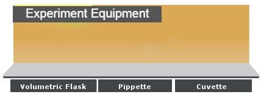
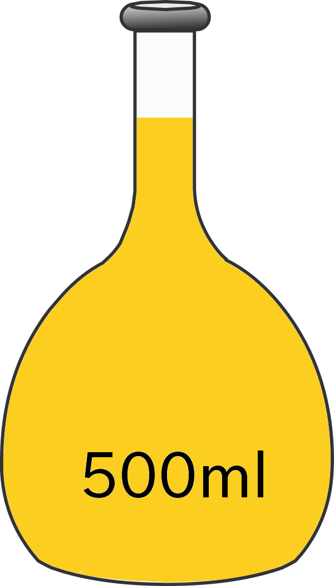

Measurement of CD Spectra at Different Temperatures
×
Manual
- Click on SOLUTION to bring it to the experiment table.
- Click on the PIPPETTE to bring it to the table
- Click on the pipette again to transfer the solution into the cuvette.
- Click on the CUVETTE to bring it to the experiment table
- Click on the lid of sample chamber of the Spectrometer to open it for placing the sample in the instrument.
- Click on the cuvette to place it in the sample holder of the chamber.
- Close the lid of the sample chamber by clicking on the lid.
- To run the Excitation Spectral Scan, open the measurement set-up screen by clicking on the fluorescence measurement icon on the computer monitor.
- Select the Excitation Scan Mode on the screen.
- On the screen, enter the Emission wavelength: 515 nm, Excitation Start Wavelength: 300 nm and Excitation End wavelength: 600 nm. One chooses the Excitation Slit(nm) and Emission Slit(nm) values (here 2.5 nm/2.5 nm) and the scan speed value (here “medium” ) also.
- Click on the 'OK' button on the set-up screen to start the wavelength scan for excitation spectrum.
- Click on 'Close' button when spectral scan is complete. In real operation, the scan data are stored in the computer. The instrument stores data and therefore asks for the Sample File name. One enters a file name to save the data.
- To run the Emission Spectral Scan of the sample, open the instrument set-up screen by clicking on the fluorescence measurement icon on the computer monitor.
- Select the Emission Scan Mode on the screen.
- On the screen, enter the Excitation wavelength: 425 nm, Emission Start Wavelength: 435 nm and Emission End wavelength: 700 nm. Emission Start Wavelength value should be larger than the excitation wavelength. Often the the maximum absorbance wavelength is chosen as the excitation wavelength. The Emission End Wavelength value depends on the sample, instrument, etc. One chooses the Excitation Slit(nm) and Emission Slit(nm) values (here 2.5 nm/2.5 nm) and the scan speed value (here “medium” ) also.
- Click on the 'OK' button on the set-up screen to run the wavelength scan for emission spectrum. One has to be sure that the solvent blank does not fluoresce in the wavelength range of interest.
- Click on 'Close' button when spectral scan is complete. In real operation, the scan data are stored in the computer. The instrument stores data and therefore asks for the Sample File name. One enters a file name to save the data.
- To take the cuvette out of the sample chamber, first click on the sample chamber lid to open it and then on the cuvette.
- Close the lid of the sample chamber by clicking on the lid.
- Click on Reset button to start over the measurements.
- Collect all data by clicking on the Data tab.
- Find out the maximum excitation and emission wavelengths and intensities.


